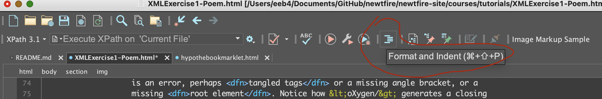

XML Exercise: A Poem
Before you begin
Before beginning this assignment, you should prepare your workspace: Where do you
want to do your coding homework this semester? You will be doing most of your coding
work for this course in the <oXygen/> XML Editor. This is installed in the
campus computer labs, and you may also install it on any other computer(s) you plan
to work with this semester. Also, before beginning homework assignments, you need to
read the related tutorials we have posted (plus notes you took in class) and keep
these open and handy to consult as you are working. For the very first assignment,
here is what you will need:
Goals
This assignment should give you experience with:
- Writing well-formed XML using elements and attributes.
- Making decisions in how to write XML so that it binds related kinds of
information together by:
- Nesting elements that relate to each other.
- Thinking about the relationship between your markup and the source
document.
- Thinking of elements and attributes working together (like file folders
with labels attached).
- Using basic features of the <oXygen/> software environment.
Try coding a poem in XML
To get started with XML coding, and working wtih a tree
structure for modeling
a document, start by coding a poem (which we absolutely chose because it is about
trees and leaves). Our source document for this assignment is the poem Leaves
by Lloyd
Schwartz as posted on poets.org.
Coding the poem in <oXygen/>
- First, highlight and copy the text of the document that is relevant for
representing the poem.
- Open a new XML document in <oXygen/>. Click on the icon at top left that
looks like a piece of paper with a folded corner (or go to File and New...),
type
XML in the filter window, and click the Create
button to launch a new XML document.
- Paste in the text you intend to mark up, and begin marking it
elements and add attributes. Remember to wrap a root element to wrap the entire document and create
a well-formed tree structure.
- Try highlighting text that you want to tag, and using CTRL + E (Windows) or Command +
E (Mac) to fill in a tag name. The oXygen editor will then insert the start and the
end tag of an element where you want to wrap it around some text.
- Remember that line breaks in the text are not preserved in XML. Mark up the
structure of the document accordingly! Use the
Format and Indent
button
(which we call pretty print
feature in oXygen to look at the structure you
are creating. Here is a screen capture showing you where to find the Format and
Indent
button. (Note: I have set up my oXygen Editor in dark mode, so your colors will likely look a little different than my image.)

- Tips: Watch the color of the square in the upper right corner: if it is green,
your code is well-formed, but if it turns
angry red
, you will know there
is an error, perhaps tangled tags or a missing angle bracket, or a
missing root element. Notice how <oXygen/> generates a closing
tag every time you type your own start tag. One handy trick is to you use your
mouse to highlight text you want to wrap in an element, and use Control+E in
Windows (or Command+E on a Mac) to bring up a window to enter an element name.
(You have to add the attributes after you set an element name.)
- Save your work frequently, and name your file using our standard form for homework names.
Challenges and suggestions for this assignment
There is no single way to do this exercise, but I want you to think about how you
nest levels of information (elements within elements), and the relationship between
elements and attributes in XML.
- Avoid coding element and attributes that just copy the same words and phrases in
the text. Think of categories and standard units, or simple identifiers you can
supply so that your markup adds new value to the text.
- How will you name your elements and attributes? Imagine repeating whatever element and attribute names you use, if
you were coding several poems like this one in a project. Think about how to keep the coding
manageable and not too complicated for others to continue.
- In poems, the way words are organized in lines, and in groups of lines is meaningful, in a way that they are not in paragraphs. Your markup should capture the line and line-group structure.
Try creating a nested structure with your markup to hold groups of lines together.
- What kinds of information or metadata could you store about the lines in attributes? For example, when the lines are indented, could you apply an attribute to hold information about meaningful formatting on the screen, even if that doesn't
literally
work
when you pretty-print the document in oXygen?
- Try some markup of interesting images / concepts inside the lines. There's so much you could mark here, and we encourage you to do that efficiently! Short element names are easiest to type and can capture important categories, instead of re-using the words in the poem.
Try to keep this under control!: apply just a few general element names (like, two or three at most) that you could use for related kinds of patterns instaed of trying to give a new name to each one.
Can you use attributes to help categorize a few interesting features of the poem?
- Try applying a little markup to annotate, or include your own notes on something in the poem. Consider adding elements (perhaps a note with your own text inside) to annotate
the document or store some extra contextual information about the words and phrases.
How could you write markup to clearly distinguish your voice from the
poem? (Hint: attributes can help with this: you could indicate yourself with your initials as a value.)
When, where, and how to submit the assignment
Check and make sure you saved your file following our
homework file naming rules, including giving it a .xml file
extension. Submit your XML file on Canvas under Assignments for this exercise, before
our next class.